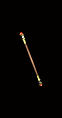

|

自殺支系
燒焦之杖
Suicide Branch
Burnt Wand
|
單手傷害: 8 - 18
(平均傷害13)
等級需求: 33
力量需求: 25
耐久度: 15
武器基本速度: [0]
150% 對不死系生物傷害
+1 所有技能等級
50% 高速施法速度
增加法力上限 10%
所有抗性 +10
+40 生命
攻擊者受到傷害 25
|
|

凱恩碎片
淨化之杖
Carin Shard
Petrified Wand
|
單手傷害: 8 - 24
(平均傷害16)
等級需求: 35
力量需求: 25
耐久度: 15
武器基本速度: [10]
150% 對不死系生物傷害
+1-123 法力
(依角色等級乘1.25)
+1-123 生命 (依角色等級乘1.25)
+1 死靈法師技能
+2 召喚與控制技能 (限死靈法師)
10% 高速施法速度
30% 快速再度攻擊
恢復生命 +5
|
|

李奧瑞克王的武器
古墓之杖
Arm of King Leoric
Tomb Wand
|
單手傷害: 10 - 22 (平均傷害16)
等級需求: 36
力量需求: 25
耐久度: 15
武器基本速度: [-20]
150% 對不死系生物傷害
受攻擊時10%機率發動等級2 骨牢
受攻擊時5%機率發動等級10 骨牆
+1-123 法力 (依角色等級乘1.25)
10% 高速施法速度
+2 恐懼 (限死靈法師)
+2 復甦骷髏法師 (限死靈法師)
+3 支配骷髏 (限死靈法師)
+3 骷髏復甦 (限死靈法師)
+2 召喚與控制技能 (限死靈法師)
+2 毒素與白骨技能 (限死靈法師)
|
|

黑手之鑰
墓地之杖
Blackhand Key
Grave Wand
|
單手傷害: 13 - 29 (平均傷害21)
等級需求: 41
力量需求: 25
耐久度: 15
武器基本速度: [0]
150% 對不死系生物傷害
+2 死靈法師技能等級
+1 詛咒 (限死靈法師)
20% 受損生命轉移至法力
30% 高速施法速度
火焰抵抗 +37%
+50 生命
等級 13 殘酷嚇阻 (30 聚氣)
-2 照亮範圍 |